Music, Claude Code and Codex activity, notifications, battery and more,
in one small black pill at the top of your screen.
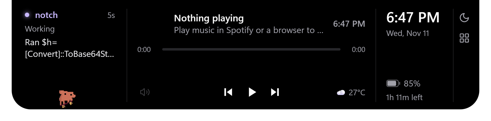
Open notch: agent sessions on the left, Spotify in the middle, time and battery on the right, tools at the edge. The real notch page with sample data.
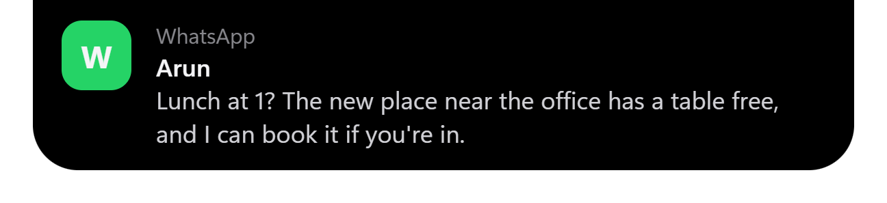
Pop-up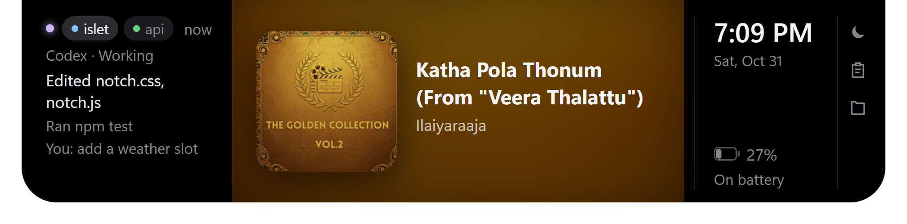
Album viewThe real notch page with sample data.
| Layer | Technology | Used for |
|---|---|---|
| App shell | Electron 45 (Chromium + Node.js) | Frameless, transparent, always-on-top window; tray; global hotkeys; powerMonitor; IPC |
| UI | HTML, CSS, vanilla JavaScript | The notch (renderer/) and the settings window (settings/) |
| Animation | Canvas 2D | Black hole charger animation (renderer/blackhole.js); runs only while playing |
| Main process | Node.js built into Electron (CommonJS) | Window control, config, timers, HTTP bridge, spawning helpers |
| Windows access | Windows PowerShell 5.1 | Media session, privacy dots, fullscreen detection |
| Native code | C# compiled at runtime (Add-Type) | Spotify process-loopback audio capture, FFT, volume |
| Storage | node:sqlite (read-only), JSON | Notification database; %APPDATA%\islet\config.json |
| Registry | HKCU Notifications\Settings | Turning Windows' banners off and back on |
| Network | fetch() | lrclib.net, Open-Meteo, your ICS link, optional Spotify Web API |
| Agent hooks | HTTP server on 127.0.0.1:47321 | Claude Code and Codex hooks post events |
| Tests | node --test | 37 files, 291 tests |
| Packaging | electron-builder 26 (NSIS) | One-click per-user installer |
| Decision | Why |
|---|---|
| No UI framework | One small view. Vanilla JS starts fast and is easy to read. |
| C# inside PowerShell | Smart App Control blocks unsigned exes. Add-Type compiles inside signed powershell.exe. |
| Read the notification DB | Windows has no notification-listener API for unpackaged apps. |
| Hooks over loopback HTTP | Instant agent status; transcript timing is the fallback. |
| powerMonitor for the charger | Plug / unplug events arrive instantly, no polling. |
| Windows media controls | No Spotify login or Premium needed; works with other players too. |
| Layer | Parts |
|---|---|
| Windows + web | Media session (SMTC) · Spotify audio (process loopback) · Registry (consent, banners) · Notification DB (wpndatabase.db) · Web APIs (lyrics, weather, ICS) · Downloads folder · Claude / Codex hooks · Power events |
| Helpers | media.ps1 · spotify-audio.ps1 + .cs · system.ps1 · notifications.js + icons.js · lyrics.js, weather.js, calendar.js, spotify-web.js · downloads.js · shelf-file.js · claude-bridge.js + hooks/islet-hook.js |
| Main process | main.js: window · tray · hotkeys · powerMonitor · config.json · IPC · starts every helper |
| Bridge | preload.js (window.bridge) · settings/preload.js (settings:load / save) |
| Screen | renderer/ (index.html · notch.css · notch.js · blackhole.js) · Settings window |
| Music | media.ps1 reads the Windows media session once a second and prints JSON; toggle, next, prev, seek and like each start media.ps1 once with that command. spotify-audio captures only the Spotify process tree into 24 log-spaced bands about 30 times a second. lyrics.js caches timed lyrics per song and resends the current ones when the page reloads. Spotify Web API answers that a newer request has overtaken are dropped, so Like acts on the right track. |
| Agents | claude-bridge.js runs an HTTP server on 127.0.0.1:47321 and keeps a status per session. hooks/islet-hook.js first checks the listener with an HMAC keyed by a per-user secret in ~/.islet-hook-token, then POSTs each event; if the check fails it stays silent and the agent asks in its terminal. A PermissionRequest is held for permissionWaitSeconds; with no answer the terminal asks as usual. |
| Notifications | notifications.js polls wpndatabase.db read-only every 2 s and parses the toast XML. Banners are hidden with ShowBanner = 0; old values are written to banners.json before the registry changes and kept until the restore is verified. On lock they are put back; on unlock hidden again. |
| Battery | main.js forwards powerMonitor on-ac / on-battery / resume. The renderer ignores the first report, dedupes, debounces 200 ms, and plays blackhole.js; an opposite event cancels it. Reduced motion shows a still frame. |
| System | system.ps1 reads the CapabilityAccessManager consent store for mic, camera and screen use, and detects fullscreen windows. |
| Info | weather.js (every 15 min). calendar.js: next timed event in 24 h; jumps straight to the current repeat, skips cancelled and excluded ones. Times follow TZID, including Outlook's Windows zone names; repeats keep their clock time in the event's own zone. DAILY and WEEKLY rules with INTERVAL, COUNT, UNTIL, BYDAY and WKST are followed; a rule with anything else, like BYMONTH, shows only its first date. downloads.js: .crdownload / .part / .partial / .download, each finished file announced once. |
| Settings | Own window and preload. main.js validates every value, writes config.json via a temp file, and applies hand edits within 2 s. A broken config.json is left alone, not overwritten. A save's answer only refills fields you haven't changed since, so typing during an autosave is kept. |
| Path | Lines | Purpose |
|---|---|---|
| main.js | 653 | Main process: window, tray, hotkeys, power events, config, IPC, starts every helper |
| preload.js | 44 | window.bridge: the only API the notch page can call |
| renderer/index.html | 111 | Notch markup: pill, pop-up, open view, panels |
| renderer/notch.css | 291 | Notch styling, states and animations |
| renderer/notch.js | 572 | Open / close, music, agents, battery, pop-ups, shelf, render loop |
| renderer/blackhole.js | 224 | Canvas black hole for charger in / out |
| settings/ | 177 | Settings window: HTML, CSS, JS and its own preload |
| claude-bridge.js | 212 | Hook HTTP server; installs and removes Claude Code / Codex hooks |
| hooks/islet-hook.js | 76 | Run by each agent hook; checks the listener, then POSTs the event |
| hooks/hook-auth.js | 26 | Per-user secret and HMAC proof for the hook and listener |
| config-check.js | 29 | Checks known config.json fields on load |
| media.ps1 | 121 | Windows media session reader and controller |
| spotify-audio.ps1 / .cs | 325 | Spotify loopback capture, FFT bands, volume |
| system.ps1 | 71 | Mic / camera / screen dots, fullscreen detection |
| notifications.js | 174 | Notification database reader, banner toggle |
| icons.js | 114 | Real app logos |
| lyrics.js / weather.js | 82 / 47 | lrclib.net lyrics, Open-Meteo weather |
| calendar.js | 213 | Next event from an ICS link, time zones and repeats |
| downloads.js | 77 | Browser download progress |
| shelf-file.js | 23 | Reads and checks shelf.json |
| spotify-web.js | 122 | Optional Spotify Web API (PKCE login) |
| test/ | 1405 | 19 test files run by node --test |
| demo.html | 191 | Original browser design demo (not used by the app) |
| docs/ · package.json | - · 54 | Screenshots · scripts, Electron version, installer config |
You need Windows 10 1903+ or 11 and Windows PowerShell 5.1 (part of Windows). Running from source also needs Node.js 22 or 24 with npm, and Git.
Get Islet-Setup-<version>.exe from github.com/goprocker/Islet/releases/latest and run it. It installs to %LOCALAPPDATA%\Programs\islet, adds Islet to the Start menu and starts it. Islet doesn't update itself, so to update, install the new version. Quit any npm start copy first, as only one Islet runs at a time.
The installer is unsigned. SmartScreen may warn about it, and Smart App Control may block it. If it's blocked, use Option B.
git clone https://github.com/goprocker/Islet.git cd Islet npm install npm start
Code changes apply on the next restart. Good for development.
npm run dist # creates dist\Islet Setup <version>.exe (run from PowerShell, not Git Bash)
Then run the setup exe. The installed copy does not follow code edits; rebuild and reinstall to update.
On first run, Islet adds itself to Start with Windows and installs the agent hooks.
| Action | How |
|---|---|
| Open | Hover the notch |
| Close | Move away, or click anywhere else |
| Cycle pill / open / hidden | Ctrl+Alt+N |
| Next monitor | Ctrl+Alt+M, or tray > Show on screen |
| Volume / seek | Scroll over the music side / click the progress bar |
| Album view | Click the album art |
| Like | Heart button, shown for Spotify (sends Spotify's Alt+Shift+B) |
| Clipboard / shelf / DND | Buttons in the tools column |
| Timer · Settings | Tray > Timer · Tray > Settings... |
| Quit | Tray > Quit (Alt+F4 does nothing on the notch) |
| Hook event | What the notch shows |
|---|---|
| UserPromptSubmit, PostToolUse | Working, with the latest actions |
| PermissionRequest, permission Notification | Needs you; Claude Code requests get Allow / Deny |
| Stop, any other Notification | Done |
| SessionStart (Codex) · SessionEnd | New session · session leaves the list |
| Key | Default | Meaning |
|---|---|---|
| size | normal | compact, normal or large |
| accent | album | Colour from album art, or #rrggbb |
| idleHide | false | Thin line when nothing is happening |
| powerAnim NEW | true | Black hole animation when the charger goes in or out |
| powerAnimStyle NEW | cinematic | cinematic, or subtle (no particles or wave, softer glow, slower spin) |
| hideInFullscreen | true | Hide behind fullscreen apps |
| notifications | true | Show Windows notifications in the notch |
| hideWindowsBanners | true | Turn off Windows' own banners while running (back on at the lock screen) |
| dnd / dndFrom / dndTo | off | Do Not Disturb, optional daily HH:MM window |
| permissionWaitSeconds | 8 | Allow / Deny hold time, 0 to 24 |
| lyrics | true | Fetch lyrics from lrclib.net |
| weatherCity / weatherUnit | empty / C | City name (empty turns weather off); C or F |
| calendarIcsUrl | empty | Private iCal link |
| downloadsFolder | empty | Empty means Downloads |
| clipboardHistory | true | Keep the last 5 copied texts in memory |
| displayId | null | Screen to show on (set by Ctrl+Alt+M or the tray) |
| spotifyClientId | empty | Optional Spotify Web API (Premium) |
If config.json can't be read (for example during a hand edit), Islet keeps the current settings and leaves the file as it is.
npm test # node --test test/*.test.js (37 files, 291 tests) npm run dist # NSIS installer, run from PowerShell # inspect the notch with Chrome DevTools node_modules\electron\dist\electron.exe . --remote-debugging-port=9333
Open chrome://inspect to see the page. Handy globals: setOpen(true), render().
| Problem | Fix |
|---|---|
| Banners still bottom-right | Start Islet normally (sandboxed shells can't write the registry). Sign out and in once if needed. |
| Banners off after a crash | Start Islet and quit from the tray, or turn the setting off. |
| Codex column empty | Approve Islet's hooks in Codex (/hooks). |
| npm run dist fails in Git Bash | Run it from PowerShell. |
| Installer blocked | Smart App Control; run from source (section 08, Option B). |
| Agent status stops updating | Check that node is on your PATH. If Islet moved, untick and tick Connect to Claude Code and Codex. |
| Installed app ignores my code changes | Rebuild with npm run dist and run the new setup exe. |
| Second launch does nothing | Only one copy runs; it opens the settings of the running one. |
| Notch won't close with Alt+F4 | By design; use tray > Quit. |
| Calendar event missing | Its time zone isn't recognised (skipped with a console warning). A repeat rule with parts like BYMONTH shows only its first date. |
| Shelf starts empty | shelf.json wasn't a valid list. The original is kept as shelf.json.invalid. |
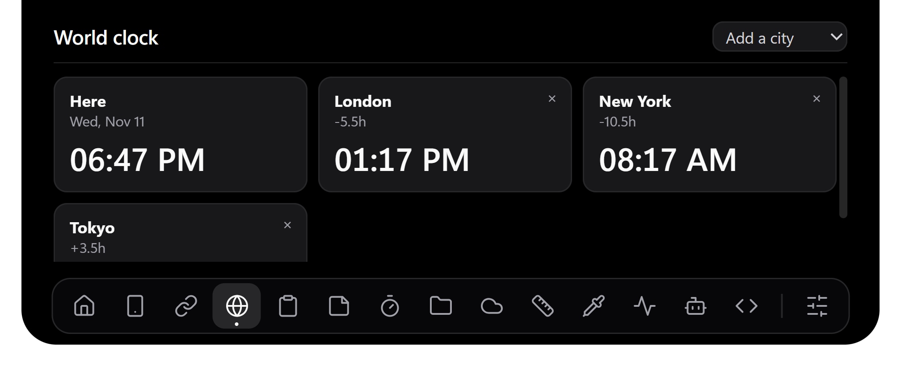
Open the notch and click the Dashboard button (four squares). Every tool opens in the tall view with the dock under it; click any icon to switch. + opens Settings.
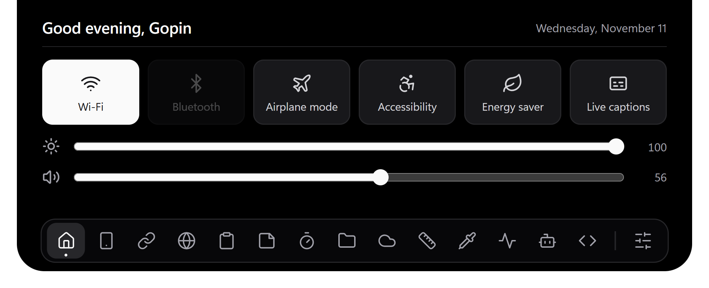
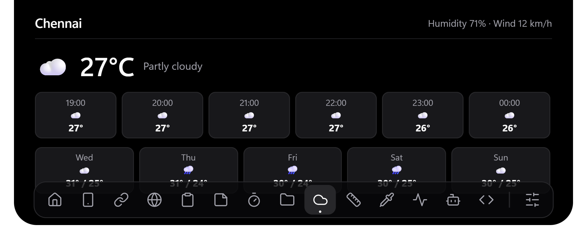
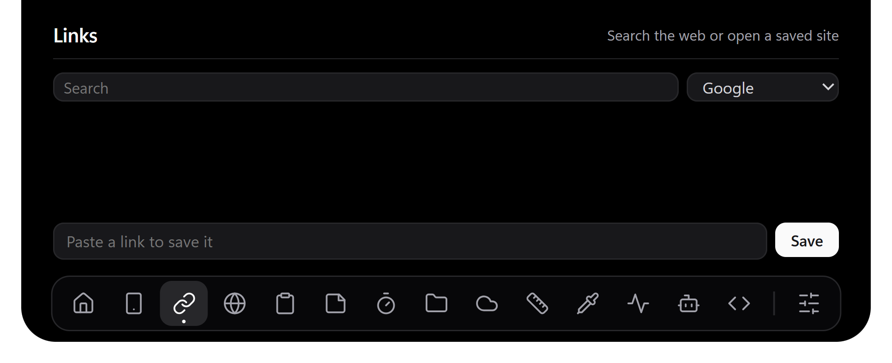
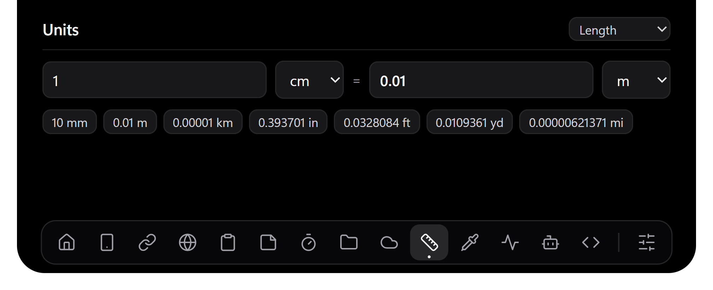
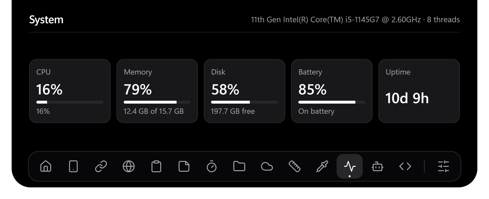
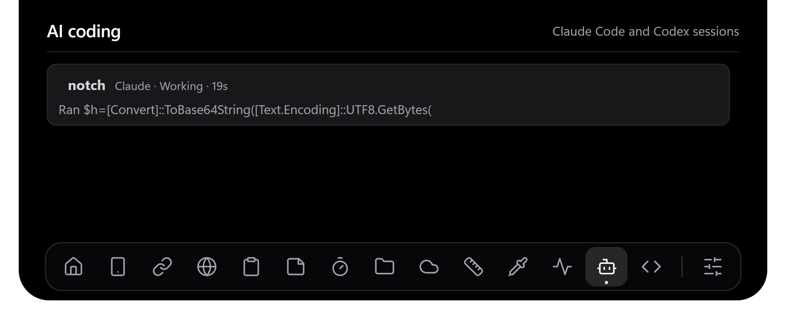
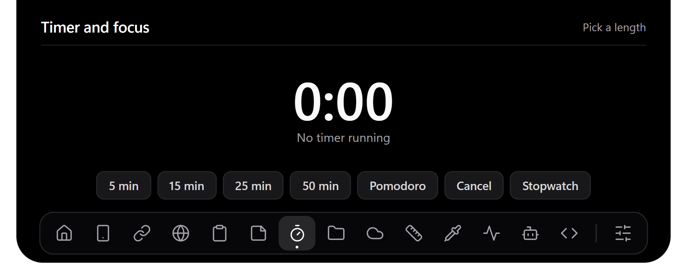
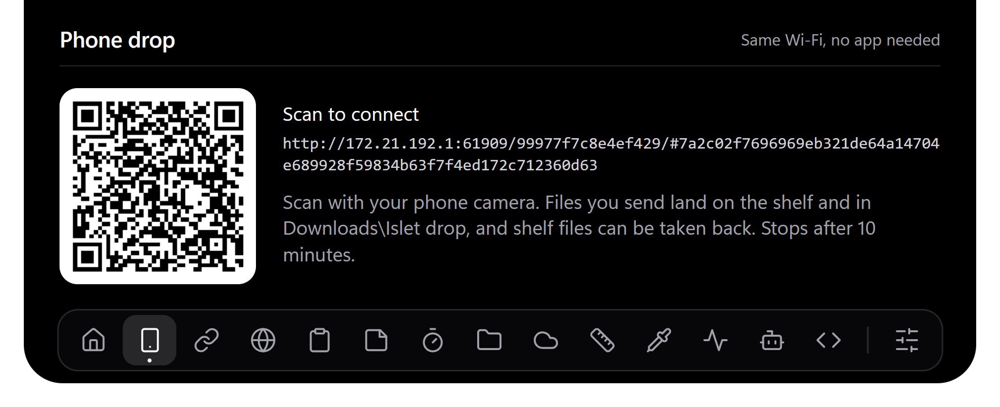
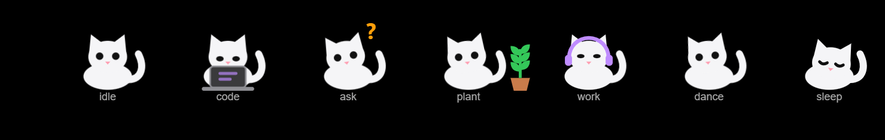
Its line appears beside it in the closed pill, which widens for 6 seconds: a hello by name when Islet starts, a line when its mood changes, and a word after 10 quiet minutes. Set Your name in Settings; empty uses your Windows account name.
| Mood | When |
|---|---|
| Sick | Battery under 20% and not charging |
| Alert | A pop-up arrived in the last 4 seconds |
| Asking | A Claude Code or Codex session needs you |
| Planting | A focus session just ended; one more pair of leaves per session today, a flower on the fourth |
| Focus | A focus or Pomodoro timer is running |
| Coding | An agent session is working |
| Music | Something is playing |
| Sleep / Idle | Two quiet minutes / anything else |
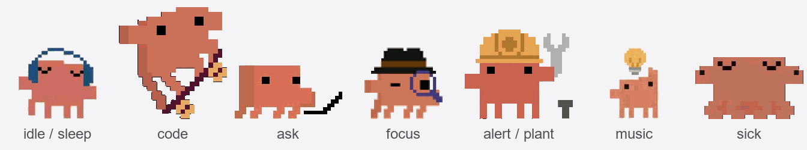
Settings → Choose a pet… takes a pet in the Codex Pets format (a .zip or its pet.json, from codex-pets.net). Islet checks the sprite sheet (192 × 208 frames, 1536 × 1872 or 1536 × 2288), copies it into its own folder and plays each mood from the matching row. Use the cat switches back.
| In the office | In the code | Its job |
|---|---|---|
| The manager | main.js (main process) | The only one with the keys. Can read files, change the registry and start programs. Starts everyone else and passes messages along. |
| The shop window | renderer/ (the notch page) | An ordinary web page: HTML, CSS, JavaScript. Draws what it is told. Can't touch your files or Windows by itself. |
| The service hatch | preload.js | A small opening between the two, with a fixed menu of allowed requests (window.bridge). Nothing else gets through. |
| Scouts | media.ps1, system.ps1, spotify-audio, notifications.js… | Each watches one thing, such as the song or the mic, and reports it to the manager. |
| The doorbell | claude-bridge.js, hooks/islet-hook.js | Claude Code and Codex ring it when something happens, so Islet doesn't have to keep checking. |
| The rule book | config.json | Your settings. The manager reads it and re-reads it when it changes. |
Nearly every feature is this same loop. Learn it once and you understand most of the 3,800 lines.
| Term | What it means here |
|---|---|
| Electron | Chromium (to draw) plus Node.js (to reach the system), packed together, so a web page can become a desktop app. |
| Main / renderer | Electron's two sides: main is the Node.js manager, renderer is the web page in a window. |
| Preload, contextBridge | A script that runs before the page and hands it a safe, hand-picked API. The page gets window.bridge, not Node.js. |
| IPC | Inter-process communication: messages between processes. ipcRenderer.send and webContents.send are the two directions. |
| stdin, stdout | A program's input and output text streams. Helpers print one JSON line to stdout; main reads it. Volume commands go in via stdin. |
| Polling vs events | Polling keeps asking "anything new?". Events get told. Islet polls the notification database and uses events for charger changes. |
| Hook | A command a tool runs at a set moment. Claude Code runs Islet's script when it stops, uses a tool or needs permission. |
| 127.0.0.1, port | 127.0.0.1 means "this same PC", so traffic never leaves the machine. A port (47321) is a numbered door on it. |
| SMTC | Windows' media controls: the service that knows what is playing, in Spotify, a browser or VLC, and can skip or seek it. |
| Process loopback | A Windows feature that captures the sound of one app only. That's why the wave ignores other apps. |
| FFT | Fast Fourier Transform: maths that turns sound samples into "how loud is each pitch". Those are the wave's bars. |
| Registry | Windows' settings database. Islet uses it to switch banners off and to see mic, camera and screen use. |
| wpndatabase.db | The SQLite file where Windows stores notifications. Islet opens it read-only. |
| requestAnimationFrame | Browser call meaning "run this before the next screen draw". Used for smooth animation. |
| Debounce | Wait for things to go quiet before reacting, so a flaky charger doesn't fire many times. |
| Race condition | A bug that depends on which of two things finishes first, such as an old reply arriving after a new one. |
| Atomic write | Write to a temp file, then rename. The real file is always the whole old version or the whole new one. |
media.ps1, already running, asks Windows once a second.Get-Player chooses: Spotify if playing, else any playing app, else paused Spotify, else whatever Windows picks.startMedia() in main.js rebuilds whole lines with lines(), parses them and calls send("media", d).lyrics.js for the words. preload.js delivers the media message to onMedia in notch.js.notch.js stores the track, picks the accent colour from the cover, opens for 2.5 s because the title changed, and calls render().render() estimates it: last position + time since. It runs every 500 ms.window.bridge.control("next") sends an IPC message from the page.control handler in main.js checks the word is toggle, next or prev, and starts media.ps1 next.TrySkipNextAsync and exits. The watcher reports the new song, and the first story repeats.wpndatabase.db. Every 2 s notifications.js asks for rows newer than the last ID seen.main.js drops it if notifications are off or Do Not Disturb is on, works out what a click should open, and finds the real logo.notch.js queues it. Pop-ups show one at a time for 4.5 s + 40 ms per character, 12 s at most; hovering keeps one open.main.js forwards only the newest set every 33 ms, and frame() eases each bar 35% toward it, so motion looks smooth.node islet-hook.js PermissionRequest and gives it the details on stdin.127.0.0.1:47321/claude and waits for the reply.claude-bridge.js validates the event, marks the session "waiting", starts a timer and keeps the HTTP response open.onPermission reaches the page. showPerm() shows the card and holds the notch open.answerPerm sends it through the hatch to bridge.answer, and settle finally replies: {"decision":"allow"}.permissionWaitSeconds (default 8) the reply says null, the hook prints nothing, and Claude asks in the terminal as usual. If Islet isn't running: the connection fails, the hook exits quietly, and again Claude just asks. Islet can never block your work.Three time limits nest so the shortest wins cleanly: bridge at most 24 s, hook gives up at 25 s, Claude Code kills the hook at 30 s.
powerMonitor fires on-ac, an instant Windows event with no polling. main.js sends power.notch.js waits 200 ms for it to settle. The first report at startup only records the state, so nothing plays at launch.BlackHole.play draws on a canvas for about 2.8 s, then its animation loop stops and costs nothing.The window is 672 × 190 px, transparent and always on top, though you only see the black notch inside it. Normally it ignores the mouse (setIgnoreMouseEvents(true, {forward:true})), so clicks pass to the app below while Chromium still sees the pointer move. Entering the notch sends hover(true), which makes it clickable. It opens after 120 ms and closes 400 ms after you leave, so a passing pointer causes no flicker.
config.json, create the window, then start the hook server (installing hooks on first run) and the tray.media.ps1, spotify-audio.ps1, system.ps1).| # | Read | Look for |
|---|---|---|
| 1 | preload.js (44 lines) | The complete list of what the page can do. It works as a table of contents. |
| 2 | app.whenReady() at the bottom of main.js | The whole app's startup on one screen. |
| 3 | startMedia() in main.js, then media.ps1 | The simplest full helper loop. |
| 4 | render() in renderer/notch.js | How state becomes what you see. |
| 5 | hooks/islet-hook.js, then claude-bridge.js | The Allow / Deny flow from the last page. |
| 6 | test/lyrics-follow.test.js | How the code is tested without a real network. |
1. Rebuilding lines from a stream (main.js). Data arrives in random-sized chunks, so a line or even an emoji can be split in two. The decoder holds back half a character, and pop() keeps the unfinished line for next time.
const decoder = new StringDecoder("utf8");
let buf = "";
stream.on("data", d => {
buf += decoder.write(d);
const parts = buf.split("\n");
buf = parts.pop();
for (const l of parts) if (l.trim()) fn(l.trim());
});
2. The hatch (preload.js). The page gets named functions, never ipcRenderer itself, so it can't send arbitrary messages.
contextBridge.exposeInMainWorld("bridge", {
control: cmd => ipcRenderer.send("control", cmd),
onMedia: on("media"), // ...and the rest of the fixed menu
});
3. A save that can't corrupt (main.js). If power fails during the first line, the real file is untouched. Rename swaps it in one step.
const tmp = configPath() + ".tmp"; fs.writeFileSync(tmp, JSON.stringify(config, null, 2)); fs.renameSync(tmp, configPath());
4. Ignoring a reply that came too late (calendar.js, weather.js). Each new request gets a number. A slow reply from an old request sees a different number and is dropped.
const gen = ++generation; // ...later, when the download finishes: if (gen === generation && text !== null) onEvent(nextEvent(text));
| Idea | In plain words | Where in Islet |
|---|---|---|
| Least privilege | Give each part only the power it needs. | The page only gets window.bridge. Windows helpers stay outside it. |
| Validate at the boundary | Trust nothing that comes from outside. | validEvent rejects bad hook events; settings:save checks every value; control allows 3 words. |
| Safe rendering | Outside text never becomes HTML. | Titles and messages use textContent; link schemes are allowlisted. |
| Atomic write | Never leave half a file. | saveConfig, saveJournal. |
| Write-ahead journal | Record how to undo before you change. | Old banner values reach banners.json before the registry changes, so a crash can be undone. |
| Fail open | If the helper fails, the main task carries on. | The hook exits quietly, and Claude asks in its terminal. |
| Fallback | Keep a second, weaker source. | Hooks give exact status; transcript timing is the guess when they're off. |
| Self-healing | Restart what dies. | Each helper restarts 2 s after it exits. |
| Debounce | Wait for it to go quiet. | Charger events: 200 ms. |
| Hysteresis | Need more evidence to change state. | Fullscreen needs 2 equal readings. Low battery warns at 20%, re-arms above 25%. |
| Dropping stale work | An old answer mustn't overwrite a new one. | generation counters, accentRequest, asked === key in lyrics. |
| Backpressure | Don't send faster than it can be used. | Wave keeps only the newest levels, 30 times a second at most. |
| Bounded memory | Every list has a limit. | 5 clips, 12 shelf files, 50 click targets, 5 hidden pop-ups, 1 MB hook body. |
| Idle costs nothing | Stop work when nothing changes. | The wave and black hole animation loops stop themselves. |
| Don't damage user files | Change only your part, and keep a backup. | Hook install backs up first and removes only Islet's handlers; a broken file is refused. |
| Testable design | Pass dependencies in, so tests can fake them. | follower(send, fetchLines) in lyrics.js. |
| Problem | Cause | Fix | Lesson |
|---|---|---|---|
| Helper exe blocked by Windows | Smart App Control blocks unsigned programs. | Compile the C# at runtime with Add-Type inside the signed PowerShell. | Platform limits shape design. |
| Allow / Deny card vanished instantly | Node fires close on the request once its body is read, so it looked as if the hook had left. | Watch res.on("close") with !res.writableEnded. | Check what an event really means. |
| Terminal prompt delayed 25 s | Claude holds its prompt while the hook waits. | Default hold cut to 8 s, set by a setting. | A feature can harm the flow around it. |
| Banners stayed off after a crash | The old values were only safe once written. | Write the journal first; restore on the next run, and delete an entry only once verified. | Plan for a crash at every step. |
| Emoji turned to garbage | Multi-byte characters were split across chunks. | One StringDecoder per stream. | Streams are bytes, not text. |
| Alt+F4 caused errors | It destroyed the window while helpers kept sending to it. | Refuse close unless really quitting. | Think about lifetimes. |
| Like hit the wrong track | A late Spotify reply described the previous song. | Drop replies that a newer request has overtaken. | Async order isn't guaranteed. |
| Album art was 0 bytes | PowerShell 5 couldn't pick the right overload on a COM object. | Call AsStreamForRead through reflection. | Know your runtime's limits. |
main.js needs Electron to run, so it has no direct tests, and mouse actions are checked by hand.Add a token to the hook server. Split main.js into smaller modules. Keep one PowerShell open for media commands. Add end-to-end UI tests. Get a code-signing certificate and add auto-update.
Windows spreads live status across the taskbar, tray, banners and terminals. Islet puts it in one place, and you can act on it without switching windows.
Three layers. PowerShell, C# and Node modules collect data. main.js owns the window, settings and helpers. A sandboxed web page draws. Helpers talk to main through stdout lines, and main talks to the page through IPC with a preload bridge.
HTML and CSS make a transparent, heavily animated shape easy, and Node gives me processes, files and HTTP. The cost is size and memory: about a 121 MB installer. For this kind of UI I accepted that.
It's one small view that updates from events. A framework would add a build step and weight for little gain. render() simply sets the screen from state.
Choose Allow / Deny. One HTTP request stays open while a person decides, across three time limits and three ways to end: notch click, terminal answer, or nothing. It must never block Claude.
Main is Node.js, there's one of it, and it has full system access. A renderer is a Chromium page per window. Islet has two: the notch and settings.
Giving a page Node.js means any injected script could run commands. With context isolation, preload exposes only named functions, so the page has a fixed menu.
setIgnoreMouseEvents(true, {forward:true}) passes clicks to the app below but still reports mouse movement. On mouseenter the page tells main to turn it off.
Node can't call Windows media or audio APIs directly. PowerShell can use WinRT and compile C#, needs no install, and a helper crash can't take down the app.
Each has an exit handler that restarts it after 2 s unless the app is quitting. The delay stops a crash loop from hammering the CPU.
app.exit(0) and not app.quit() for a second copy?quit() is asynchronous, so the rest of the script could start helpers first. exit stops it immediately.
The listener API needs a packaged app identity. So I open Windows' wpndatabase.db read-only with node:sqlite every 2 s and take rows above the last ID. It works but is undocumented, so it's a known risk.
Windows process loopback captures one process tree. The C# helper finds the oldest Spotify process and captures it. Then: Hann window, FFT, 24 log-spaced bands, and values 0 to 255 printed as text.
We hear pitch by ratios, so each octave feels equal. Equal-width bands would give almost all the bars to high notes.
Smart App Control blocks unsigned exes. Add-Type compiles in memory inside powershell.exe, which is signed.
Windows keeps LastUsedTimeStart and LastUsedTimeStop per app under CapabilityAccessManager in the registry. Stop = 0 means still in use.
It needs a Premium developer account, and it's Spotify-only. Windows media controls need no login and work for other players. The Web API remains optional, for like state and up next.
Slow replies overwriting new state: old calendar links, old weather cities, an album cover overriding a fixed colour, and a Spotify reply acting on the previous track. Each request gets a number or key, and stale replies are dropped.
Banners. Old values go to banners.json atomically before the registry changes. On the next start they can be restored, and an entry is only removed once the registry confirms it.
config.json is broken?Keep the current settings and leave the file alone, because it may be a hand edit in progress. Only a missing file gets created.
settings.json safely?Read and validate every file before writing any, back up, and refuse a bad one. Removal filters out only handlers containing islet-hook.js, so other tools' hooks survive.
Animation loops stop when nothing moves, helpers print only on change where possible, and wave data is limited to 30 per second. Transcripts are read from the tail only.
Page isolated from Node, fixed bridge API, server on loopback only, every external input validated, outside text set with textContent, and link schemes allowlisted.
The hook server has no authentication, so any local program could fake events. They can't approve anything for real, because the answer goes back to whoever asked. I'd add a random token shared through the hook's config.
Its text is only ever shown as text. Clicking it opens a URL only if the scheme is on the allowlist; otherwise it opens the sending app.
291 tests in 37 files using Node's built-in node --test, with no extra dependencies. Mostly logic: calendar rules, time zones, lyrics, hook install, and races. Fakes replace the network and http.createServer.
The calendar tests run with the host set to different zones, such as Asia/Kolkata and UTC, including daylight-saving changes.
The real screen and mouse, and the PowerShell helpers. I check those by hand, and through Chrome DevTools using --remote-debugging-port=9333.
Answer truthfully; the commit history publicly shows Claude and Codex as co-authors. A strong answer says what you decided, how you checked the result, and which bugs you found. This guide is there so you can back that up.
| Thing | Value | Thing | Value |
|---|---|---|---|
| Media check | every 1 s | Hook server | 127.0.0.1:47321 |
| Notification check | every 2 s | Permission hold | 8 s default, 24 s max |
| Agent session check | every 2 s | Agent sessions shown | 5, with last 3 actions |
| Screen redraw | every 500 ms | Session counts as recent | 30 min |
| Wave data | about 30 per second | Hover open / close delay | 120 ms / 400 ms |
| Download scan | every 1.5 s | Helper restart | after 2 s |
| Weather refresh | every 15 min | Window size | 672 × 190 px |
| Source size | about 3,800 lines | Tests | 169 in 19 files |
Close this guide and answer aloud. If you get stuck, go back to the section in brackets.
saveConfig writes straight to config.json? (18)Run npm install and npm start. Try these, one at a time. Undo each with git checkout -- <file>.
notch.js. Restart, and feel why 120 was chosen.--remote-debugging-port=9333, open the page from chrome://inspect, and call setOpen(true).test/lyrics.test.js for a line with no words. Run npm test.preload.js, send it from notch.js, and log it in main.js.